ApproachTrainer User Manual
Practice tool for flying instrument approaches with live Dynon SkyView data
This manual assumes you already understand ILS, localizer, VOR, and NDB approach concepts. It explains how ApproachTrainer simulates guidance from live Dynon SkyView data — it does not teach instrument procedures.
1. Introduction
ApproachTrainer synthesizes CDI and glideslope guidance from GPS and avionics data. It is never to be used in IFR conditions or without a safety pilot aboard, and it is not a substitute for real instrument training. This caution is displayed on every profile-creation screen in the app.
ApproachTrainer is a practice tool for flying instrument approaches using live Dynon SkyView data, without needing an actual approach in range or a certified nav source. It synthesizes localizer/glideslope (or VOR/NDB) guidance from your GPS position relative to a threshold you define, and displays it on HSI/VOR-style gauges plus plan and profile views.
2. Requirements
Network
Your tablet must be on the same network as SkyView (or its relay). ApproachTrainer listens automatically for the data feed — no IP address entry needed.
Live Data Sources
Two mutually-exclusive data sources are available, both require their own set of data fields:
- SkyView active (Dynon UDP): latitude, longitude, ground speed, magnetic track, magnetic heading, indicated altitude (with pressure altitude + baro setting), and heading bug. If any are missing, guidance won't compute.
- ESP32 knob companion: OBS and altitude-trim knobs with onboard barometer. Position comes from the tablet's built-in GPS. No magnetometer — the pilot flies their own panel compass. Gauge selection is limited to VOR/CDI only (HSI requires heading source).
Other Requirements
- Permissions: Internet and location access required. Storage access needed on Android 9 and below for saving logs.
- Magnetic variation: Computed automatically — no setup needed.
- Connection status: No built-in indicator on main screens. Use Settings → Debug → Datastream Debug to confirm data flow.
3. Screen Layout
Once you're flying an approach, the screen is split top/bottom:
Top Half — Instrument Gauge
Choose between HSI or VOR/CDI style from Settings (or with a button in the bottom control row during ILS Practice Mode). The gauge shows compass card, CDI needle, glideslope pointer, and LOC/GS/NAV flags.
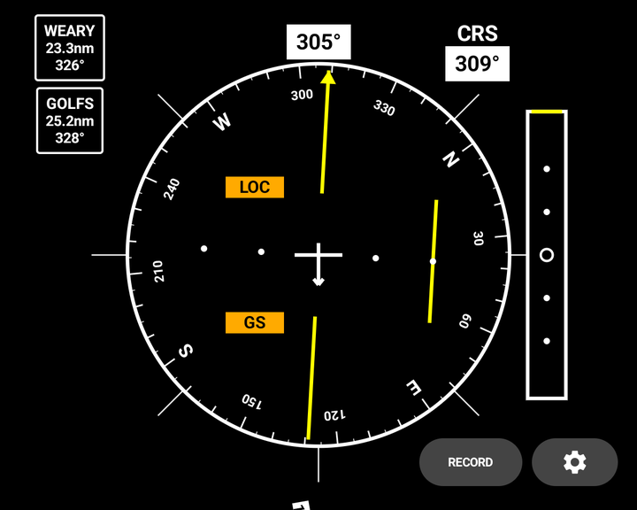
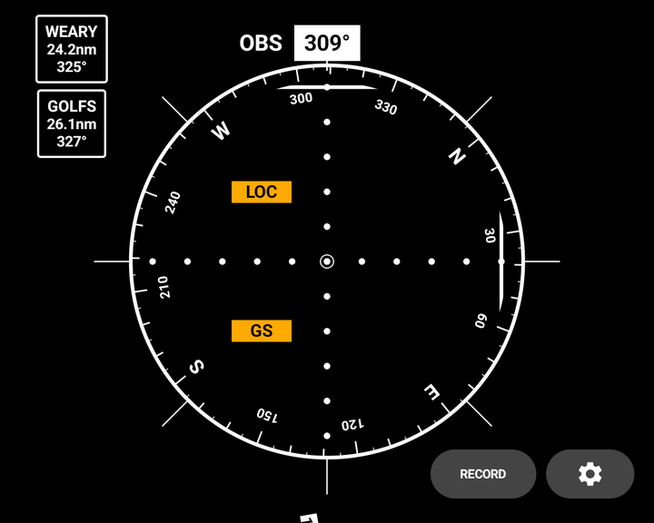
Tappable buttons to the left show your FAF, IAF, and any custom fixes with distance and bearing. The ⚙ Settings button (lower right) opens a menu with:
- Profiles — Returns to Profile Selection (only way back once flying)
- Debug — Opens Datastream Debug
- Gauge-mode toggle (HSI/VOR)
Bottom Half — Multiple Layouts
Tap to cycle through three layouts:
- Plan + Profile (default) — Top-down plan view alongside altitude profile strip
- Plan (expanded) — Full-width plan view alone
- Corridor + Profile — "Corridor" view alongside profile strip
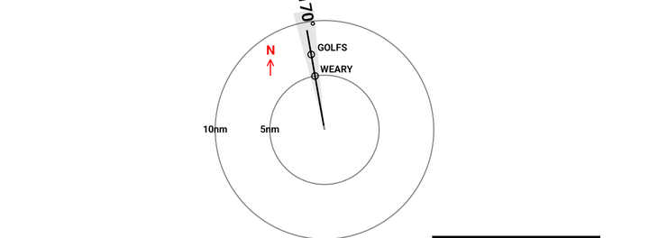
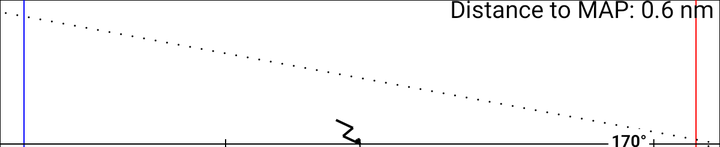
Profile Strip
Shows your altitude against the approach's glideslope with DH/MDA line. Top-right corner displays a "MAP:" reference card showing missed-approach fix, climb altitude, and heading/DIRECT instruction — this card is always visible as a reference, not a tactical cue.
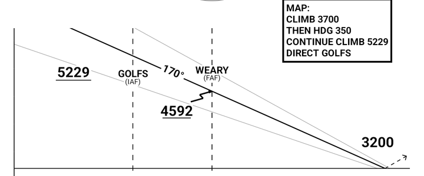
4. Creating an Approach
From Profile Selection, three buttons start the process:
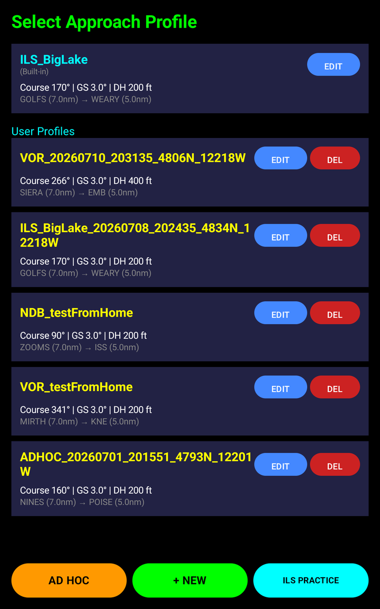
Quick Setup — AD HOC
Opens AD HOC APPROACH SETUP:
- Pick approach type: PRECISION, VOR, or NDB
- Course and altitude default from current SkyView heading/altitude bug (editable)
- Optionally add up to two stepdown fixes
- Tap SET THRESHOLD HERE
This synthesizes threshold/FAF/IAF geometry from your current GPS position and starts flying immediately.
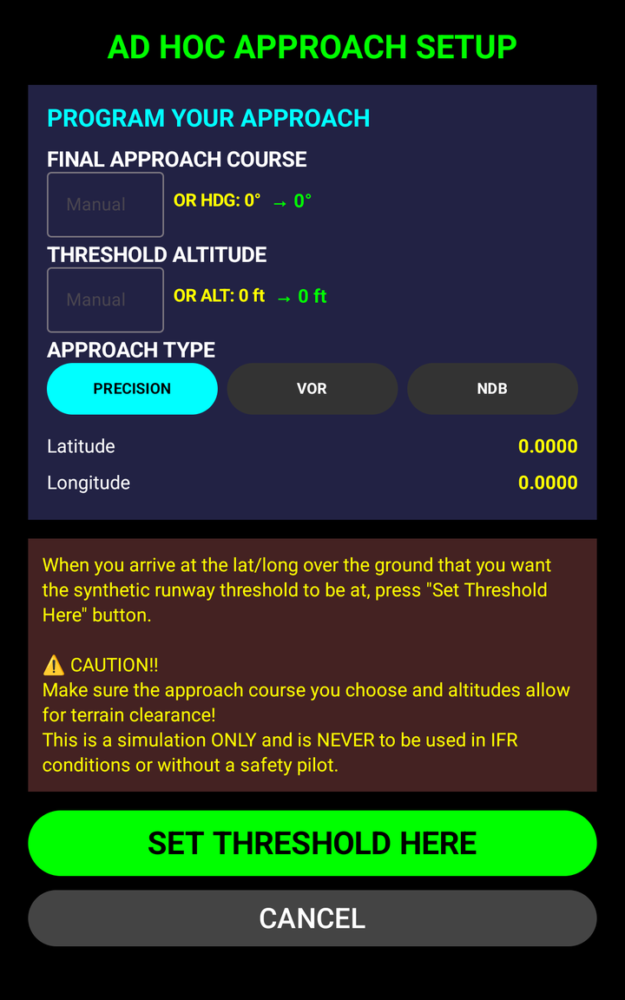
Detailed Setup — + NEW
Opens Create Approach Profile — a full manual form with:
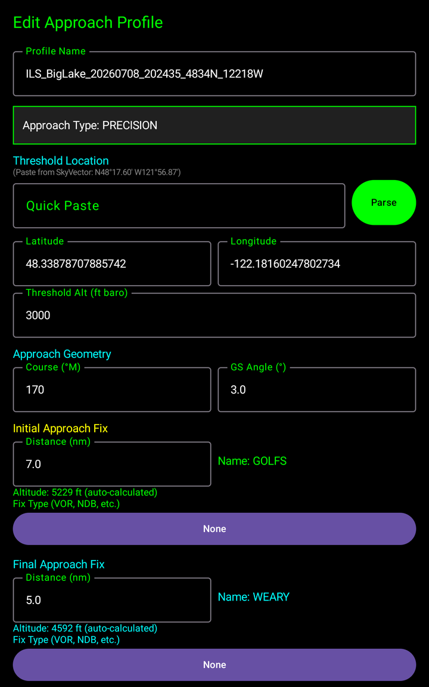
- Profile name, approach type (all 4 available)
- Quick Paste — parses SkyVector-style coordinates (e.g.,
N48°17.60' W121°56.87') - Threshold lat/lon/altitude, course (magnetic), glideslope angle (precision: 2.5°–6.4°)
- IAF/FAF details: distance, name, altitude, fix type (auto-named with FAA-style pronounceable names)
- Up to 5 additional fixes with auto-naming
- Missed-approach fix picker
- Ground-proximity check (hard block if ≥1500 ft AGL or no terrain data)
- Descent rate warning (>750 fpm requires acknowledgment before save)
Built-In Example
"ILS_BigLake" (tagged "Built-in" in the list) is always available at the top of the Profile Selection list if you want to try the app without setup. It's a practice location, not a real airport, and it bypasses the terrain and descent-rate checks that apply to profiles you create.
Safety Model
5. Approach Types
Four types exist: PRECISION (ILS), LOC, VOR, NDB. Quick Setup only offers PRECISION/VOR/NDB; LOC is available only through the detailed editor.
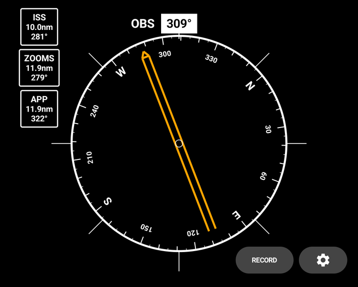
Minimums
| Setup Method | Precision | VOR/NDB |
|---|---|---|
| Ad Hoc (Quick Setup) | 200 ft AGL | 400 ft AGL |
| Detailed Editor | Threshold + 200 ft (all types) | |
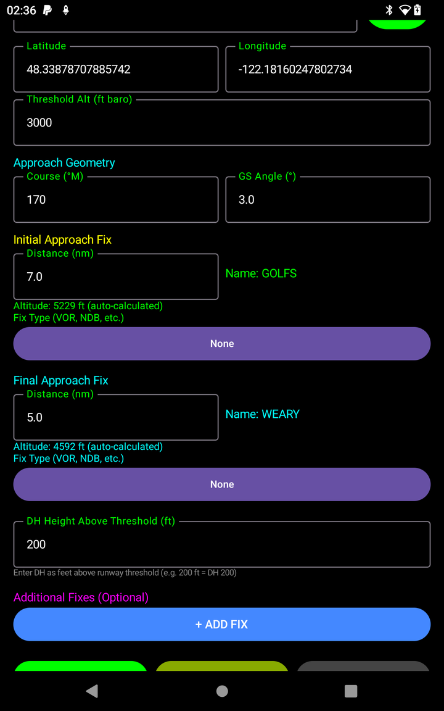
VOR Approaches
Additionally model a "cone of confusion" near the station, which affects needle behavior close in.
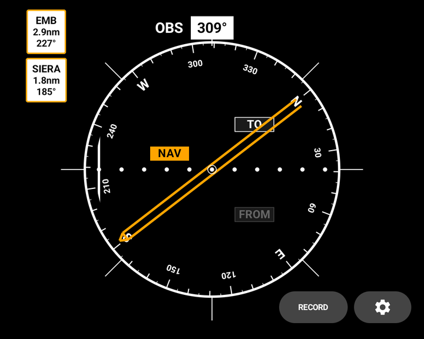
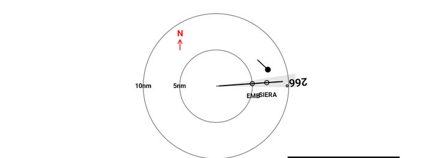
6. ILS Practice Mode
From Profile Selection, ILS PRACTICE opens a dedicated practice screen (separate from profile-based flow — no profile is saved).
The point: Quick, repeatable stick-and-rudder drills without setting up course geometry. Tap START and your current position, heading, and altitude instantly become an imaginary ILS to fly. No missed approach, no minimums, nothing persists after you exit.
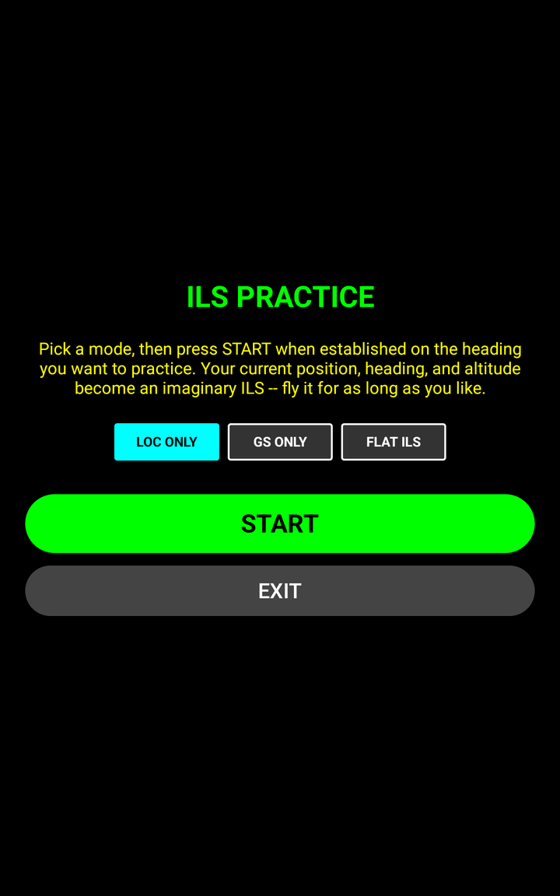
Modes
- LOC ONLY — Pure lateral tracking
- GS ONLY — Pure vertical tracking
- FLAT ILS — Combined LOC + GS with oscillating glidepath (continuous ~3° descent / ~1° climb cycle, not a single descent to minimums)
Sensitivity Presets
| Preset | Localizer Width | Glideslope Width |
|---|---|---|
| NORMAL | ±2650 ft | ±300 ft |
| MEDIUM | ±1325 ft | ±188 ft |
| NARROW | ±450 ft | ±76 ft |
Sensitivity resets to NORMAL every time you re-capture a course. Choose a mode, tap START — your current position, heading, altitude, and variation are captured as the reference course. NEW CRS re-captures without leaving the screen. EXIT returns to Profile Selection.
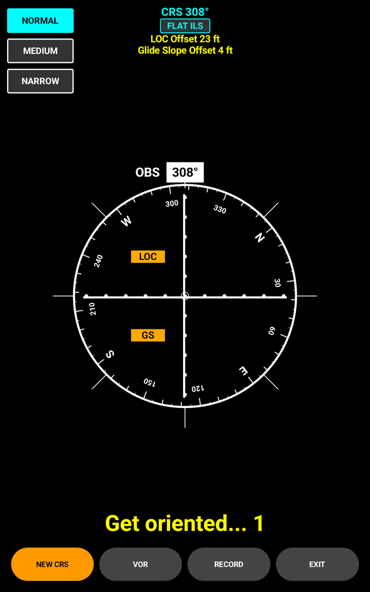
7. Flying the Approach
As you fly, the app updates lateral/vertical guidance continuously based on your live position:
No Automatic Missed-Approach Trigger
⚠️ There is no automatic missed-approach trigger today. The live gauges don't respond to reaching MINIMUMS or MISSED. You fly and self-assess against raw distance/altitude/needle readouts, the same way you'd hand-fly a real approach. The "MAP:" card is always visible as a reference, not an in-the-moment cue.
Other Behaviors
- VOR approaches — Expect different needle sensitivity near the station due to the cone of confusion.
- Nav data not flagged as unhealthy — LOC/GS/NAV flags indicate only whether guidance applies to your approach, not data freshness. If SkyView goes stale mid-approach, there's no visual flag. Cross-check the raw SkyView display.
- Heading source doesn't fail over mid-session — Once the app picks a heading source, it stays with that source for the rest of the session, even if that source later drops, for training consistency.
8. Hardware Companion
An ESP32-based wireless knob module, now integrated and bench-validated. It replaces touchscreen controls for the OBS course selector and altitude-trim knob, while a barometric sensor supplies local pressure altitude. Communicates over Bluetooth LE at 10 Hz.
The Device
- Sensors: Two rotary encoders (course and altitude-trim) with an onboard barometer (10cm altitude resolution)
- Connectivity: Bluetooth LE, 10 Hz update rate
- Power: USB
Knob Behavior — Software Acceleration
- OBS (course) knob: Slow = 1°/click; medium = 2°/click; fast spin = 7°/click. Wraps at 360°.
- ALT (altitude-trim) knob: Slow = 10 ft/click; medium = 25 ft/click; fast spin = 50 ft/click. Range ±2000 ft, clamped.
Button Actions (Long-Press at 500 ms)
- ALT button: Resets altitude trim to 0 (display altitude reverts to raw ISA sensor reading). Useful for quick calibration re-check.
- OBS button: Syncs the OBS knob to your current GPS magnetic track.
First-Run Setup
- Enable Bluetooth and grant location permissions.
- Power on the knob module.
- Tap Settings → Debug → BLE Knob Debug to verify, or just start flying — the app will prompt if needed.
Bearing Needle Behavior in Knob Mode
The VOR gauge's bearing needle doesn't have aircraft heading in knob-only mode, so it shows raw magnetic bearing to the fix — screen-up equals magnetic north. You resolve the rest against your own panel compass, matching what you'd do flying a fixed-card ADF without a heading card.
9. Troubleshooting
Gauges aren't moving / No guidance
- Confirm your tablet is on the same network as SkyView.
- Open Settings → Debug → Datastream Debug. It shows live GPS/ADAHRS/System data, a "Has Minimum Data" ✓/✗ indicator, and Network Status (PRIMARY/FOLLOWER role + packet rate). If "Has Minimum Data" is ✗, check which required field is missing (lat/lon, ground speed, track, heading, indicated altitude, heading bug).
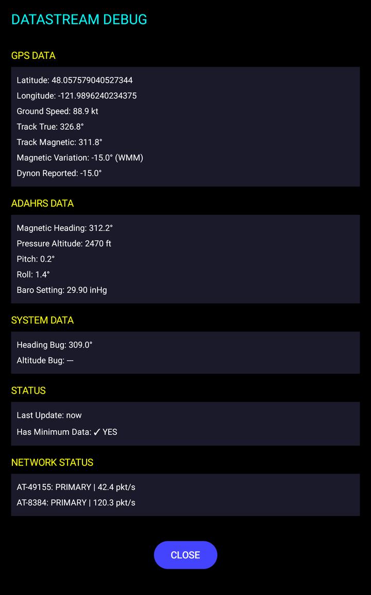
"No terrain data available at this location" / Can't set a threshold or save a profile
You're outside the app's currently-bundled terrain coverage (Pacific Northwest only). This is a hard block with no override — you can only create profiles inside the covered region.
"Threshold altitude is only X ft AGL here... Minimum is 1500 ft AGL"
The location/altitude you're trying to use is too close to terrain. This is a hard block with no override.
Setup won't let you save a profile (descent rate)
The detailed editor blocks saving if it detects a steep descent rate (>750 fpm between fixes). Tap Acknowledge and Continue to proceed. This is intentional, not a bug.
Something looks wrong mid-approach and the flags don't show a failure
Known current limitation — stale or lost nav data isn't flagged yet. Cross-check the raw SkyView display.
Capturing data to report a problem
The RECORD button (main flying screen and ILS Practice screen) saves a log to Downloads/ApproachTrainerLogs/. Send this folder along when reporting a problem.
10. Appendix
Minimums Reference
| Path | Precision | VOR/NDB |
|---|---|---|
| Ad Hoc (Quick Setup) | 200 ft AGL | 400 ft AGL |
| Detailed Editor | Threshold + 200 ft (all types) | |
Profile Save-Time / Threshold-Set-Time Checks
| Check | Applies To | Status |
|---|---|---|
| Threshold ≥1500 ft AGL (terrain-based, NW region only) | Ad Hoc + Detailed Editor | Active — hard block, no override |
| Descent rate >750 fpm between fixes | Detailed Editor | Active — blocks save until acknowledged |
ILS Practice Sensitivity Reference
| Preset | LOC Width | GS Width |
|---|---|---|
| NORMAL | ±2650 ft | ±300 ft |
| MEDIUM | ±1325 ft | ±188 ft |
| NARROW | ±450 ft | ±76 ft |
Minimum Data Fields Required for Guidance
Latitude, longitude, ground speed, magnetic track, magnetic heading, pressure altitude + baro setting, heading bug
Approach Types
PRECISION, LOC, VOR, NDB